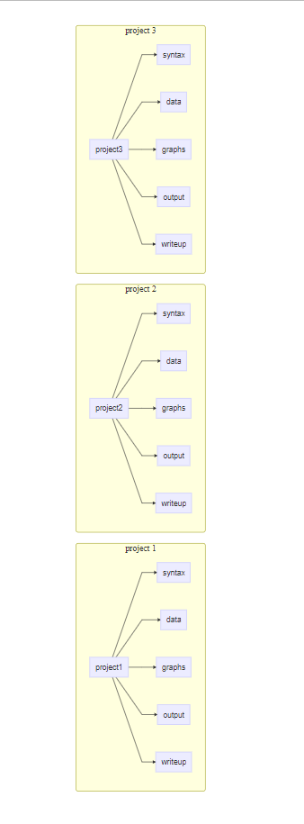

| pos | variable | label |
|---|---|---|
| 1 | country | country id |
| 2 | HDI | Human Development Index |
| 3 | family | family id |
| 4 | id | unique country family id |
| 5 | identity | hypothetical identity group variable |
| 6 | intervention | recieved intervention |
| 7 | physical_punishment | physical punishment in past week |
| 8 | warmth | parental warmth in past week |
| 9 | outcome | beneficial outcome |
Storing Data
Spreadsheets
Spreadsheets are sometimes used to collect and store data. Spreadsheets may sometimes be used because they are the only program that some individuals or agencies have for storing data. Spreadsheet programs may also be used because spreadsheets can be very intuitive and easy ways of managing small amounts of data.
However, spreadsheets may be problematic as a data storage solution for a number of reasons detailed below, especially as data sets grow in size. Notably, statistical programs like Stata, R, or Julia can all store additional information with each variable such as: a variable label, describing the contents of the variable, or the survey question that resulted in the variable; and a value label, which attaches qualitative information to each possible value of the response.
Spreadsheets do not generally contain this extra information about each variable, or column of data, which may lead to errors in working with quantitative information.
Describe The Data
Notice how a description of the data contains information that helps us to understand the variables.
Descriptive Statistics and Bar Graph
Variable Labels and Value Labels Help Us Understand Our Data
Notice how the descriptive statistics and graph are informative in that they contain information on the variable label and value label. These help us to get an intuitive sense of the information in the data. We see this information when we list out the data as well.
Descriptive Statistics
| country | HDI | family | id |
|---|---|---|---|
| 1 : 100 | Min. :33.00 | Min. : 1.00 | Length:3000 |
| 2 : 100 | 1st Qu.:53.00 | 1st Qu.: 25.75 | Class :character |
| 3 : 100 | Median :70.00 | Median : 50.50 | Mode :character |
| 4 : 100 | Mean :64.77 | Mean : 50.50 | NA |
| 5 : 100 | 3rd Qu.:81.00 | 3rd Qu.: 75.25 | NA |
| 6 : 100 | Max. :87.00 | Max. :100.00 | NA |
| (Other):2400 | NA | NA | NA |
| identity | intervention | physical_punishment | warmth |
|---|---|---|---|
| Identity B:1507 | no intervention:1547 | Min. :0.000 | Min. :0.000 |
| Identity A:1493 | intervention :1453 | 1st Qu.:2.000 | 1st Qu.:2.000 |
| NA | NA | Median :2.000 | Median :4.000 |
| NA | NA | Mean :2.479 | Mean :3.522 |
| NA | NA | 3rd Qu.:3.000 | 3rd Qu.:5.000 |
| NA | NA | Max. :5.000 | Max. :7.000 |
| NA | NA | NA | NA |
| outcome |
|---|
| Min. :29.61 |
| 1st Qu.:48.02 |
| Median :52.45 |
| Mean :52.43 |
| 3rd Qu.:56.86 |
| Max. :74.84 |
| NA |
Bar Graph
List Out A Sample Of The Data
| country | HDI | family | id | identity | intervention |
|---|---|---|---|---|---|
| 1 | 69 | 1 | 1.1 | Identity A | no intervention |
| 1 | 69 | 2 | 1.2 | Identity A | intervention |
| 1 | 69 | 3 | 1.3 | Identity B | intervention |
| 1 | 69 | 4 | 1.4 | Identity A | no intervention |
| 1 | 69 | 5 | 1.5 | Identity A | no intervention |
| 1 | 69 | 6 | 1.6 | Identity B | intervention |
| physical_punishment | warmth | outcome |
|---|---|---|
| 3 | 3 | 57.47 |
| 2 | 1 | 50.1 |
| 3 | 2 | 52.92 |
| 0 | 5 | 60.17 |
| 4 | 4 | 55.05 |
| 5 | 3 | 49.81 |
Now Use The Data In Spreadsheet Format
We now import the Excel data file. We use the first row of data as variable names.
We see right away–when we list some of the data–that the data are less informative.
| country | HDI | family | id | identity | intervention | physical_punishment |
|---|---|---|---|---|---|---|
| 1 | 69 | 1 | 1.1 | 1 | 0 | 3 |
| 1 | 69 | 2 | 1.2 | 1 | 1 | 2 |
| 1 | 69 | 3 | 1.3 | 0 | 1 | 3 |
| 1 | 69 | 4 | 1.4 | 1 | 0 | 0 |
| 1 | 69 | 5 | 1.5 | 1 | 0 | 4 |
| 1 | 69 | 6 | 1.6 | 0 | 1 | 5 |
| warmth | outcome |
|---|---|
| 3 | 57.47 |
| 1 | 50.1 |
| 2 | 52.92 |
| 5 | 60.17 |
| 4 | 55.05 |
| 3 | 49.81 |
Warning
Adding this valuable information back into the data set may take a great deal of extra effort.
Descriptive Statistics and Bar Graph
Notice here how the descriptive statistics and graph are much less informative. For example, it is now not immediately clear what the values of identity or intervention represents. The information on variable label and value label will have to be added back into the data when preparing a report for dissemination.
Descriptive Statistics
| country | HDI | family | id |
|---|---|---|---|
| Min. : 1.0 | Min. :33.00 | Min. : 1.00 | Length:3000 |
| 1st Qu.: 8.0 | 1st Qu.:53.00 | 1st Qu.: 25.75 | Class :character |
| Median :15.5 | Median :70.00 | Median : 50.50 | Mode :character |
| Mean :15.5 | Mean :64.77 | Mean : 50.50 | NA |
| 3rd Qu.:23.0 | 3rd Qu.:81.00 | 3rd Qu.: 75.25 | NA |
| Max. :30.0 | Max. :87.00 | Max. :100.00 | NA |
| identity | intervention | physical_punishment | warmth |
|---|---|---|---|
| Min. :0.0000 | Min. :0.0000 | Min. :0.000 | Min. :0.000 |
| 1st Qu.:0.0000 | 1st Qu.:0.0000 | 1st Qu.:2.000 | 1st Qu.:2.000 |
| Median :0.0000 | Median :0.0000 | Median :2.000 | Median :4.000 |
| Mean :0.4977 | Mean :0.4843 | Mean :2.479 | Mean :3.522 |
| 3rd Qu.:1.0000 | 3rd Qu.:1.0000 | 3rd Qu.:3.000 | 3rd Qu.:5.000 |
| Max. :1.0000 | Max. :1.0000 | Max. :5.000 | Max. :7.000 |
| outcome |
|---|
| Min. :29.61 |
| 1st Qu.:48.02 |
| Median :52.45 |
| Mean :52.43 |
| 3rd Qu.:56.86 |
| Max. :74.84 |
Bar Graph
While the graph has an informative title, as well as informative axis labels, a crucial piece of information is missing, what each status of the intervention represents.
A Few Final Issues
Notice finally how spreadsheets doesn’t enforce the idea of whether variables are numeric, or text, and so would allow storage of different types of information in the same column. Relatedly, numeric variables may be improperly stored as text, often necessitating recoding before graphical or statistical procedures can be employed.
Secondly, Excel would allow some of your columns to have the same name, which might make data difficult to work with in other software.
| x | y | verylongvariablename | verylongvariablename |
|---|---|---|---|
| 100 | 1 | Smith | 20 |
| 200 | 2 | 30 | NA |
| not applicable | x | yes | 60 |
File Organization
Files for all of your work should not be stored all together in downloads. Ideally, you should have a specific set of folders for your work. Each project, should be stored in its own individual folder. Ideally, each project folder would have a separate sub-folder for separate aspects of the project such as data, code or syntax, and various outputs.
